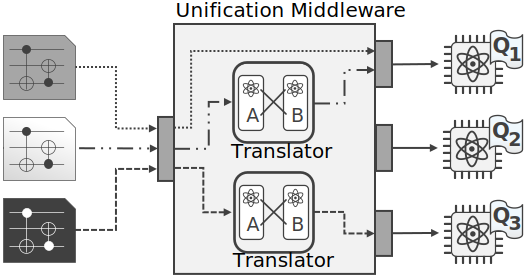

Quantum Computing Patterns
Unified Execution
Aliases: –
Tags:
© M. Beisel, J. Barzen, F. Leymann, and B. Weder, Operations Patterns for Hybrid Quantum Applications, in Proceedings of the 15th International Conference on Cloud Computing and Services Science (CLOSER). SciTePress, 2025.
Intent
How to execute a quantum circuit independently of the heterogeneous quantum cloud offerings and their supported quantum circuit formats?
Context
Quantum circuits should be executed using a suitable quantum cloud offering. The circuits might be implemented utilizing different SDKs, such as Qiskit and Braket, quantum programming languages, such as Q#, or quantum assembler, such as OpenQASM [Leymann et al., 2020], [Vietz et al., 2021].
Forces
When an SDK is used to implement quantum circuits, they can only be executed utilizing a quantum cloud offering supported by the respective SDK. If, on the other hand, a quantum programming language or a quantum assembler is used, the quantum cloud offering for the execution must support this technology. This often leads to a vendor lock-in, which prevents users from flexibly switching to a different quantum cloud offering that provides, e.g., cheaper access.
Solution
Unify the execution of quantum circuits by utilizing a middleware providing a single, unified interface for accessing different quantum cloud offerings. Figure 3 gives an overview of the conceptual structure of the unification middleware. This middleware uses a set of translators that automatically translate the given quantum circuit for the target quantum device if the format of the circuit is not natively supported. Since accessing quantum devices requires users to authenticate themselves, an access token is required for each quantum cloud offering. They can either (i) be provided with each execution request or (ii) the middleware can store the tokens of each user. Alternatively, (iii) the middleware provides access to all quantum devices via a separate pricing model, facilitating the execution for users as they do not require an access token for each quantum cloud offering.

Result
The quantum circuit can be executed via a single interface independently of the circuit format and quantum cloud offering. Thus, vendor lock-ins can be avoided and circuits can be executed using different quantum cloud offerings without any additional effort. However, the unification middleware does not automatically select a suitable quantum device but only supports the execution on the target device.
Examples
–
Related Patterns
The Quantum Circuit Translator pattern [Bühler et al., 2023] is utilized by the unification middleware to translate quantum circuits that use data formats incompatible with the target quantum device. To select a suitable quantum device for the quantum circuit at hand, the Quantum Hardware Selection pattern can be used in combination with the Unified Execution pattern. The Unified Observability pattern enables monitoring and analyzing the execution of quantum circuits when using heterogeneous quantum cloud offerings.
Unified Execution
can be used with
Unified Execution
can be used with
Known Uses
Giortamis et al., 2024 introduce Qonductor, a tool for executing quantum applications via a hardware-agnostic API. Salm et al., 2020 present a concept as well as a corresponding tool for automatically translating circuits between different circuit formats and executing them via different quantum cloud offerings. Weder et al., 2024 introduce a unification middleware for quantum cloud offerings, which also enables additional features, such as circuit cutting.